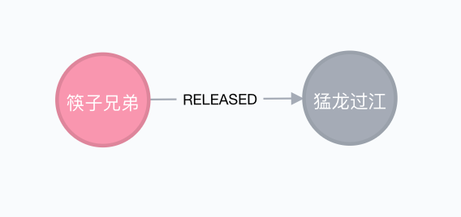
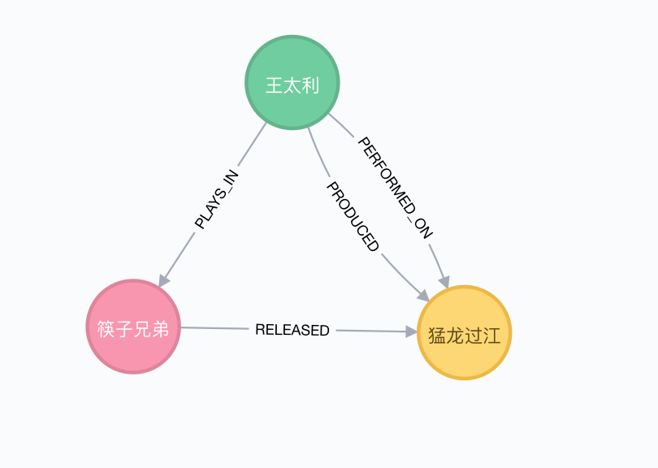
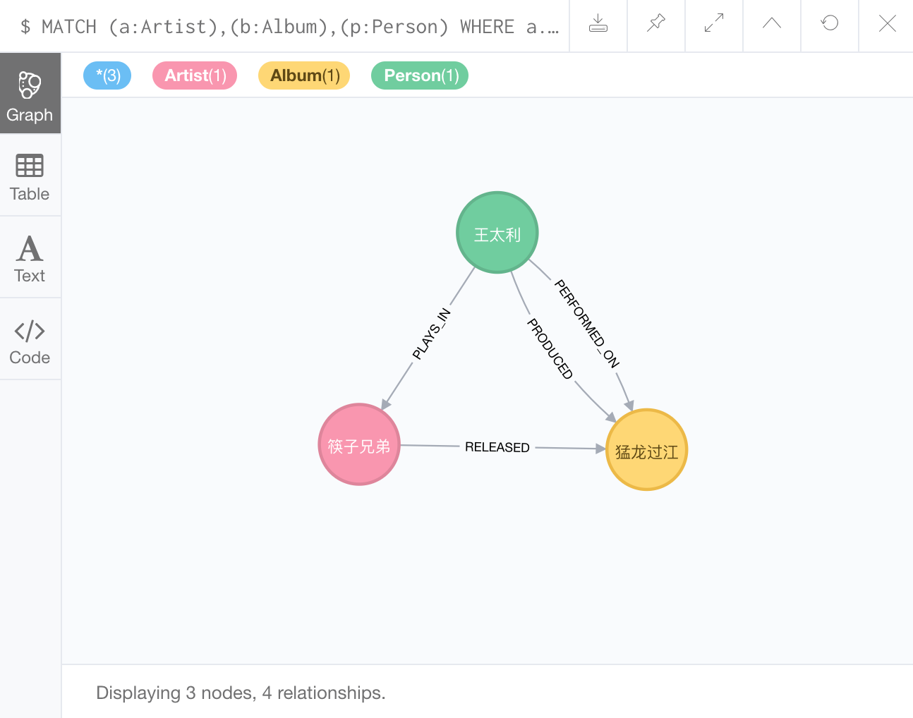

就像在 Neo4j 中创建节点一样，可以用
CREATE来创建节点间的关系。
创建关系的语句由 CREATE 组成，后边跟着要创建的关系详情。
举例
我们在先前创建的点之间创建一个关系，首先创建一个乐队和专辑之间的关系。
我们将创建如下关系

这是 Cypher 的 CREATE 创建上边关系的语句：
|
|
上边代码的解释
首先我们使用 MATCH 语句查找我们要创建关系的两个点。
可能有很多节点带有 Artist 或 Album 标签，所以我们需要找到我们感兴趣的节点。在这个例子中，我们使用属性值来过滤它：使用之前赋值给每个节点的 name 属性。
接下来是用来创建关系的 CREATE 语句，在这个例子中，它通过我们在第一行中给出的变量名称（a 和 b）来引用两个节点，关系是通过字符画模式，用箭头指示关系方向来建立的：(a)-[r:RELEASED]->(b)。
我们给这个关系一个变量名 r 并且给了一个 RELEASE 类型（乐队发行专辑）。关系类型和节点的标签概念类似。
添加更多关系
上边是一个非常简单的例子，Neo4j 擅长的事情是处理很多相互关联的关系。
为了看到继续创建更多节点和它们之间的关系是多么容易，让我们在刚刚的基础上继续构建。我们来创建一个点外加两个关系。
我们将要达到下边图效果

这张图展示了王太利在筷子兄弟乐队中参与演奏，在专辑中进行表演并且专辑是由他来创作的
我们为王太利创建一个节点：
|
|
现在来创建关系并返回图：
|
|
执行完成后你应该就可以看到前边截图中的图了。
